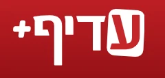
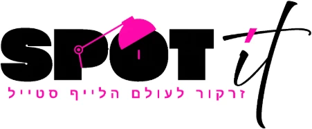

Israel's Economy Channel · TV Interview
Guy Koubbi Interviewed Live on Israel's Economy Channel
A live studio interview with Guy Koubbi on Israel's Economy Channel.
Publications and media references featuring Guy Koubbi, Blue Season International Ltd., and related business activities across entrepreneurship, alternative investments and long-term value creation.
Guy Koubbi is the founder and owner of Blue Season International Ltd., an entrepreneur, investor and business developer active since 2004. Over the years, he has participated in business ventures, strategic partnerships and investment activities across multiple sectors in Israel and internationally.
A live studio interview with Guy Koubbi on Israel's Economy Channel.

Guy Koubbi, owner and CEO of Anchor Yields – Whisky Trade, worked with UK-based Howden Group on a dedicated all-risks policy for whisky cask investments.

Promotional feature (PR) on Spotit about Guy Koubbi, Blue Season and Whisky Trade, and investing in Scotch whisky casks.
Coverage of Cask Flow Limited, founded by Guy Koubbi and Rafi Golan, direct cask ownership and storage in Scotland.
An article on the launch of the Scottish brokerage, Whisky Trade’s cask trading activities and investor support.
Coverage of Cask Flow Limited and the Anchor Yields–Whisky Trade business model, with a focus on ownership and transparency.
An article on Anchor Yields–Whisky Trade’s Scottish operations, the purchase and ownership process, investment horizon and risks.
Coverage of the expansion in Scotland and the establishment of Cask Flow Limited, alongside cask holding periods and investment risks.
An article on Anchor Yields and Whisky Trade’s entry into the Israeli market, whisky maturation, cask storage and investor support.
Promotional coverage of Whisky Trade, storage in Scotland and investor support. The investment carries risks and returns are not guaranteed.
Promotional content on Whisky Trade and Cask Flow, cask ownership, storage and insurance in Scotland, and exit options.
Promotional content on Anchor Yields and Cask Flow’s Scotch whisky cask activities, purchasing, storage and support for Israeli investors.
An archive article on Guy Koubbi’s early activity in the spirits industry, the founding of Blue Season International and the import of Red Square drinks to Israel.
Media names, logos and article links are presented for reference and attribution to the original publishers. Full articles remain hosted by their respective publishers.